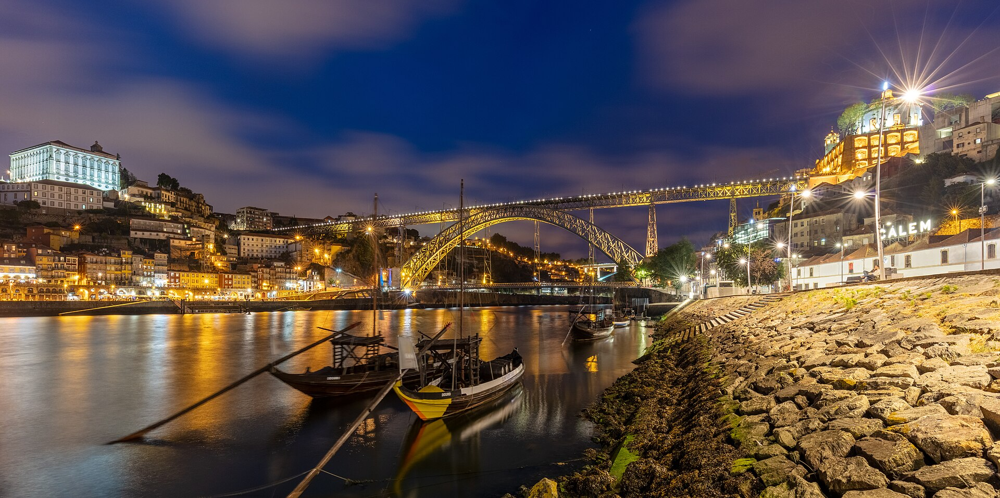
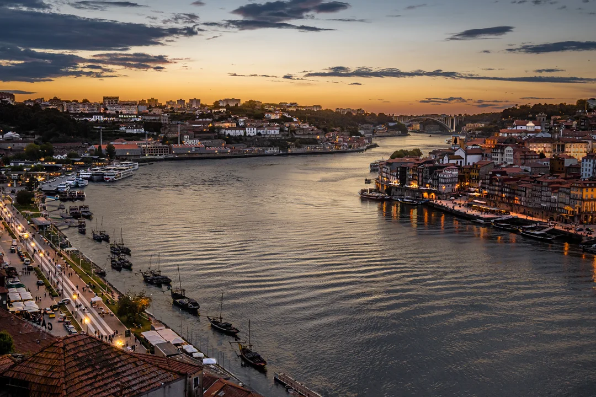
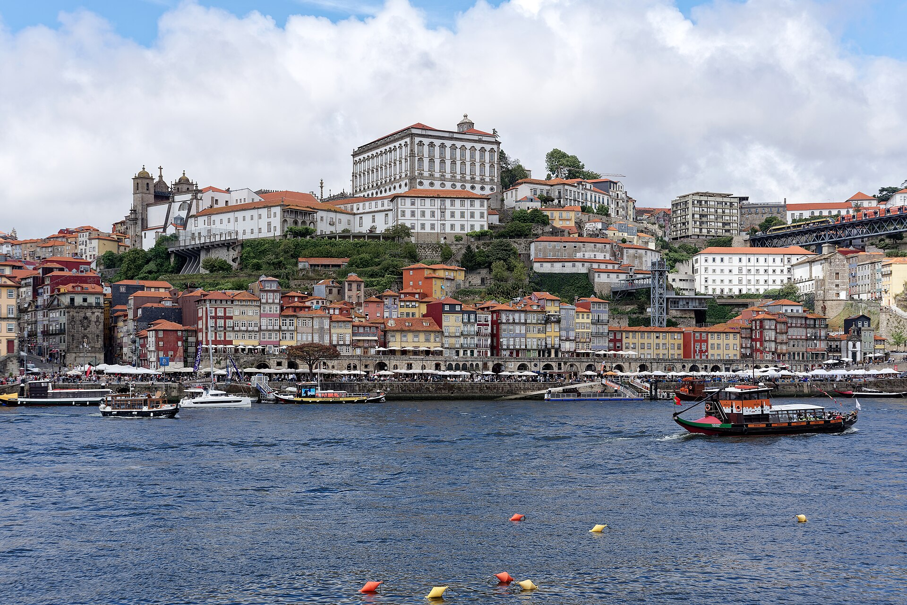
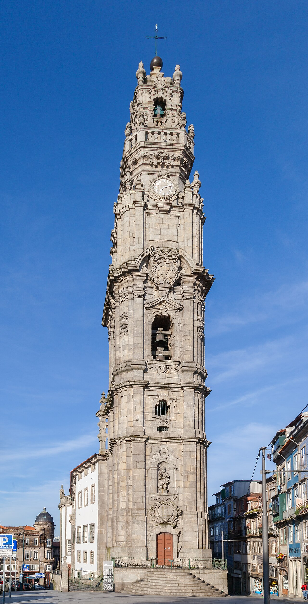
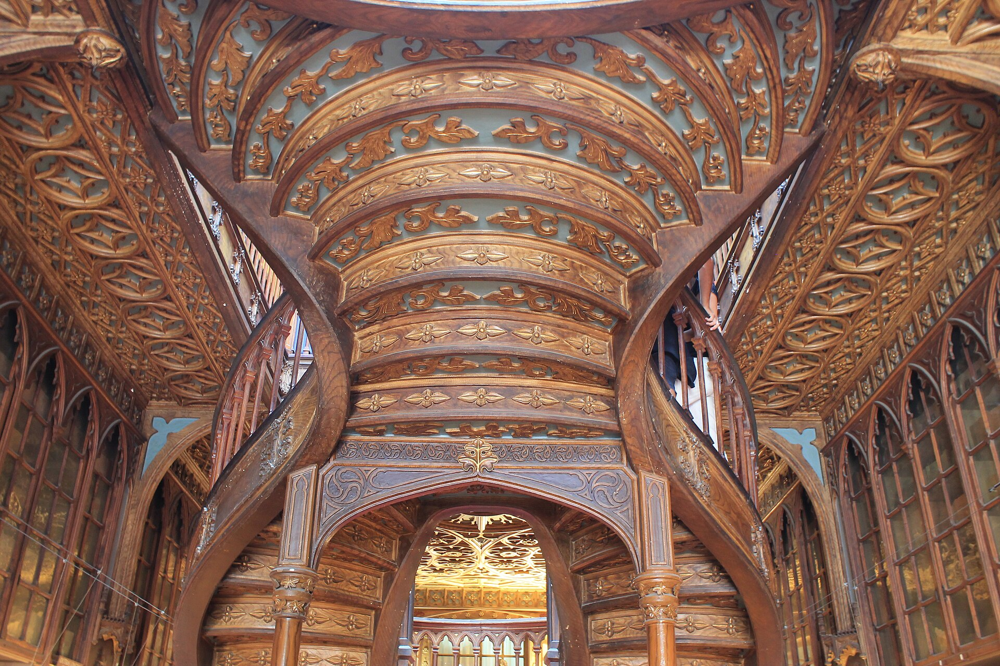
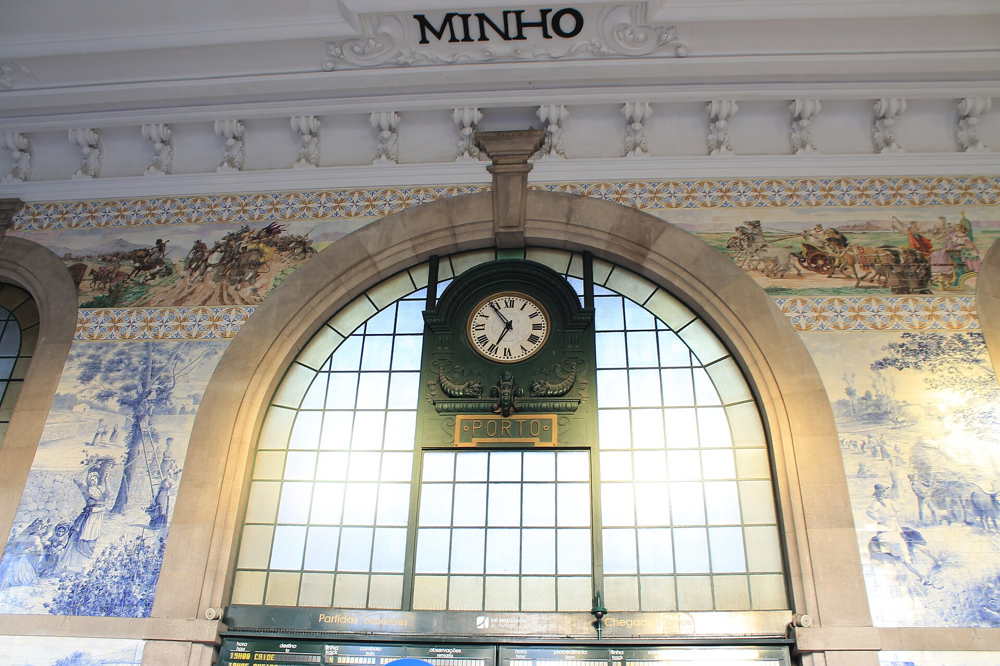
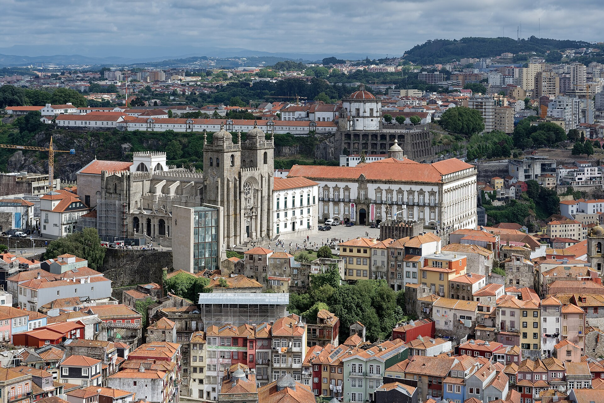
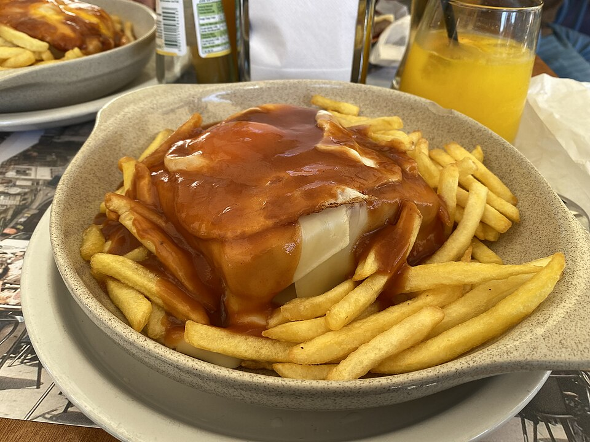
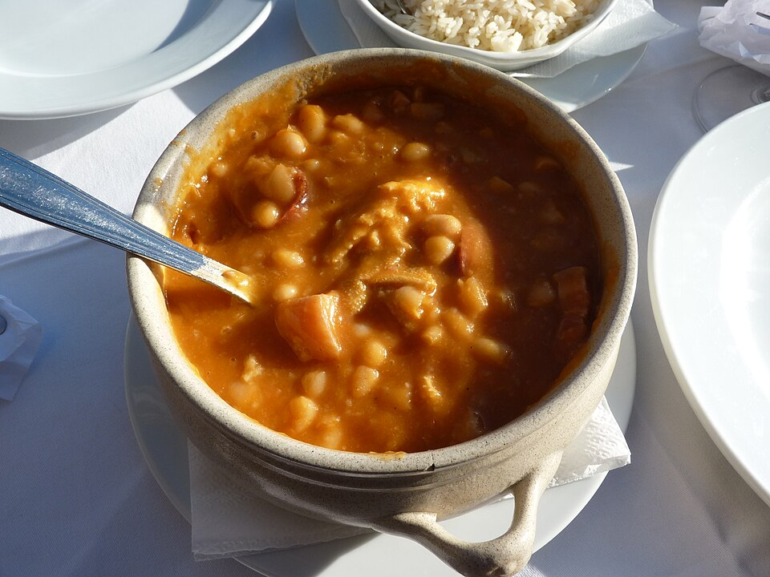
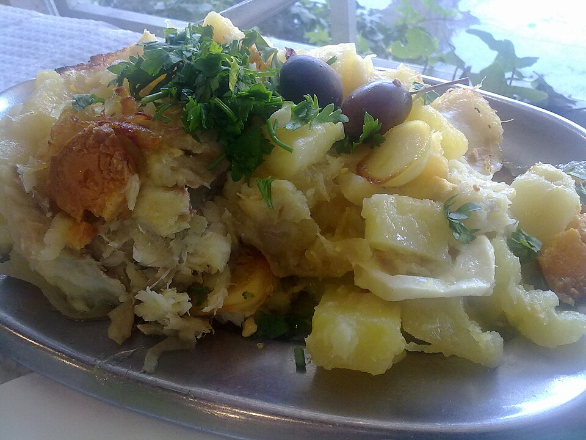

1886
Dom Luís I Bridge
Two-level iron bridge over the Douro, designed by a partner of Gustave Eiffel. Walk across the top level for the best view.

Class trip · 2 days
The city that gave Portugal its name
Our trip starts in
Ready? Scroll down and fly into the city.
Where is it?
Porto is in the far south-west of Europe, on the Atlantic Ocean.
Where is it?
It's the second biggest city in Portugal, in the north of the country — about 300 km from Lisbon.
Where is it?
The city sits on hills where the Douro river meets the ocean.

A small port on the Douro called Portus Cale. Its name later became the name of the whole country: Portugal.
The city gave all its meat to the ships of Prince Henry the Navigator and kept only the tripe. That's why people from Porto are still called “tripeiros”.
The Douro valley became one of the first official wine regions in the world. Port wine made the city famous everywhere.
The historic centre became a UNESCO World Heritage Site.

Two-level iron bridge over the Douro, designed by a partner of Gustave Eiffel. Walk across the top level for the best view.

About 75 m tall, for a long time the highest building in Portugal. Climb to the top to see the whole city.

One of the most beautiful bookshops in the world, with a famous red wooden staircase.

A train station decorated with about 20,000 blue-and-white azulejo tiles that show Portugal's history.

The oldest big building in the city. It looks more like a fortress than a church.



3 dishes you must try
“Little French girl”: a huge sandwich with meat, ham and sausage, covered in melted cheese and a hot beer-and-tomato sauce. Usually with fries.
Tripe stew with white beans — the dish that gave locals their nickname, “tripeiros”.
Salted cod with potatoes, onion, eggs and olives. It was invented in Porto by a cod merchant called Gomes de Sá.